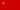
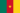
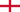
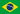

Introduccion
El fútbol o balompié en Colombia es el deporte más popular del país. Esto se debe en buena parte al gran cubrimiento mediático, a la popularidad de sus principales equipos, con participaciones en torneos internacionales logrando títulos como la Copa Libertadores de América, y a las apariciones incesantes de talentosos futbolistas que llevaron a la Selección Colombia a seis mundiales. Su desarrollo futbolístico lo sitúa en la segunda línea mundial histórica.
Su máximo logro internacional fue el título obtenido en la Copa América 2001 realizada en Colombia (siendo campeón invicto durante todos los partidos del campeonato y sin recibir goles en contra). Gracias a ello, el equipo disputó la Copa FIFA Confederaciones 2003 ocupando el cuarto lugar, haciendo una buena participación frente los mejores de cada confederación en ese entonces.
Jugadores mas relevantes
Radamel Falcao
Radamel Falcao, juega de delantero centro, creo que es de los mas influyentes jugadores en la historia del fútbol de colombia por no decir el mas influyente, pues ha sido referente en los equipos por lo que ha pasado, ha gando dos veces la europa league y en esas dos ocaciones ha sido maximo goleador del torneo, ha sido parte del equipo de la temporada en la temporada 12/13.
Es el jugador que más goles ha anotado en una sola temporada de un torneo europeo, con diecisiete goles. Este récord lo comparte con Cristiano Ronaldo, quien marcó diecisiete goles durante la Liga de Campeones de la UEFA 2013-14. Tal récord lo logró con el F. C. Porto en la Liga Europea de la UEFA durante la temporada 2010-2011.

Carlos Valderrama
Carlos Alberto Valderrama Palacio (Santa Marta, Magdalena, 2 de septiembre de 1961), conocido popularmente como El Pibe Valderrama, es un exfutbolista colombiano que jugaba de mediocentro ofensivo.
Valderrama fue un volante de muy buena técnica, participó en los mundiales de Italia 1990, Estados Unidos 1994 y Francia 1998. Fue incluido como miembro FIFA 100 por Pelé y ocupa el 39.º lugar en el ranking del mejor jugador sudamericano del Siglo XX publicado por la IFFHS en 2004.
James Rodriguez
James Rodriguez, juega de mediocentro ofencivo, está en esta lista por lo que ha logrado en clubes y en la seleccion, empezando por sus inicios que ganó la europa league con el porto, dos veces campéon de la bundesliga, dos veces campeon del mundial de clubes con el real madrid(uno de los pocos colombianos en jugar para el real madrid) y dos veces campeon del torneo mas importante de clubes, la champions league tambien con el real madrid(de los unicos colombianos que han conquistado el titulo).
Con su seleccion es igual de memorable, debutó en mundiales en Brasil 2014, donde ganó el premio a mayor goleador, premio a mejor gol del mundial y mas tarde a mejor gol del mundo, aparte de que en ese mundial llevó a Colombia a su mejor particimpacion en mundiales dejandola en el puesto 5.

Ivan Ramiro Córdoba
Ivan entra en esta lista pues ha sido de los mas influyentes colombianos que han jugado fútbol en la historia, empezando en sus clubes, donde su logro mas significativo fue ganar la champions league de la temporada 2009/2010, siendo el segundo capitan del Football Club Internazionale Milano.
La segunda razon para decir que Ivan merece estar aquí es porque el fue el capitan de la colombia que conquisto la copa america, el unico titulo de la seleccion a la fecha, y encima fue el, el que metió el gol de la final que quedó 1-0 contra la selccion de Mexico, en la copa america 2001 que se organizó en Colombia.
David Ospina
Por ultimo y por supuesto no menos imporatante, el jugador con mas partidos disputados con la seleccion, David hizo parte de la seleccion que quedó quinta en el mundial de brasil, el lleva jugadas 4 eliminatorias a mundiales, y cuatro copas america de las cuales hemos quedado terceros en dos de ellas.
Este puesto estaba disputado con Óscar Córdoba, que junto al ya mencionado Ivan Ramiro Córdoba, ganaron la copa america de Colombia, aparte de ser muy influyente con su club Boca Juniors que hace parte del 11 historico del club en el cual gano 2 libertadores y dos copas intercontinentales.
Equipos mas importantes

Atlético Nacional
Es un club de fútbol de la ciudad de Medellín. Es el equipo más laureado del fútbol colombiano con 30 títulos oficiales entre cmapeonatos nacionales e internacionales y por ello se le denomina popularmente como el Rey de Copas.
Títulos importantes:
- x2 Copa libertadores
- x16 Copa Colombia
- x1 Recopa Sudamericana

América de Cali
El América de Cali mas conocido como América es un club de fútbol de la ciudad Cali. Es considerado uno de los clubes más grandes del pais, pues es de los mayores camperones de colombia con 18 titulos oficioles, aparte de haber ganado la liga ya 15 veces y en lo personal mi favorito.
Títulos importantes:
- x15 Copa Colombia
- x1 Copa Merconorte
Millonarios FC
Es un club de fútbol de la ciudad de Bogotá. Es de los mas importantes del pais y del continente, entre sus filas tuvo jugadores como Alfredo Di Stéfano, Adolfo Pedernera o Willington Ortiz, los cuales hacen parte de los mejores 20 de Sudamerica en el Siglo XX, y tambien por habeer ganado 15 veces la liga.
Títulos importantes:
- x15 Copa Colombia
- x1 Copa Merconorte

Junior de Barranquilla
Es un club de fútbol de la ciudad de Barranquilla como su nombre indica. Ha sido 9 veces campeon de Colombia, subcampeón de la Copa Sudamericana y semifinalista de la Libertadores.
Títulos importantes:
- x9 Copa Colombia

Independiente Santa Fe
Es un club de fútbol de la ciudad de Bogotá (mejor conocido como Santa Fe en honor al antiguo nombre de la capital). Fue el primer campeo del futbol colombiano y el unico equipo colombiano ganador de la copa Sudamericana.
Títulos importantes:
- x1 Copa Sudamericana
- x9 Copa Colombia
Mención honorífica

Once Caldas
Es un club de fútbol de la ciudad de Manizales. Este equipo mercia la mención honorífica porque a pesar de no haber ganado tantas veces la liga es el segundo equipo campeon de América, pues ganó la Libertadores en 2004.
Títulos importantes:
- x1 Copa Libertadores
- x4 Copa Colombia
Colombia en mundiales
| Ronda de eliminacion | Sede del muncial | Ultimo resultado |
|---|---|---|
| Fase de grupos | Chile-1962 |

4:4

|
| Octavos de final |
 Italia-1990
Italia-1990
|

2:1
|
| Fase de grupos |
 EEUU-1994
EEUU-1994
|
0:2
|
| Fase de grupos | Francia-1998 |

2:0
|
| Cuartos de final |  Brasil-2014 |
2:1
|
| Octavos de final |
 Rusia-2018
Rusia-2018
|
1:1 (4:3)
|